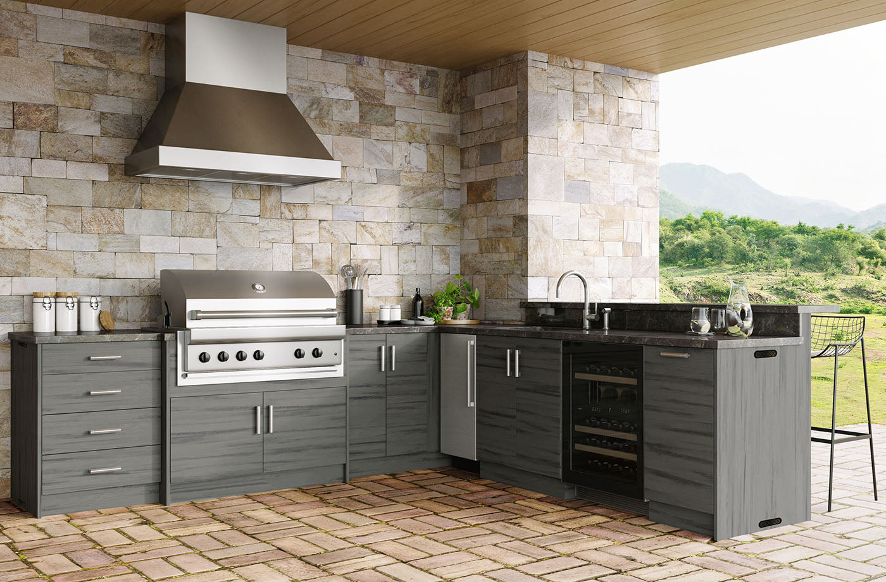
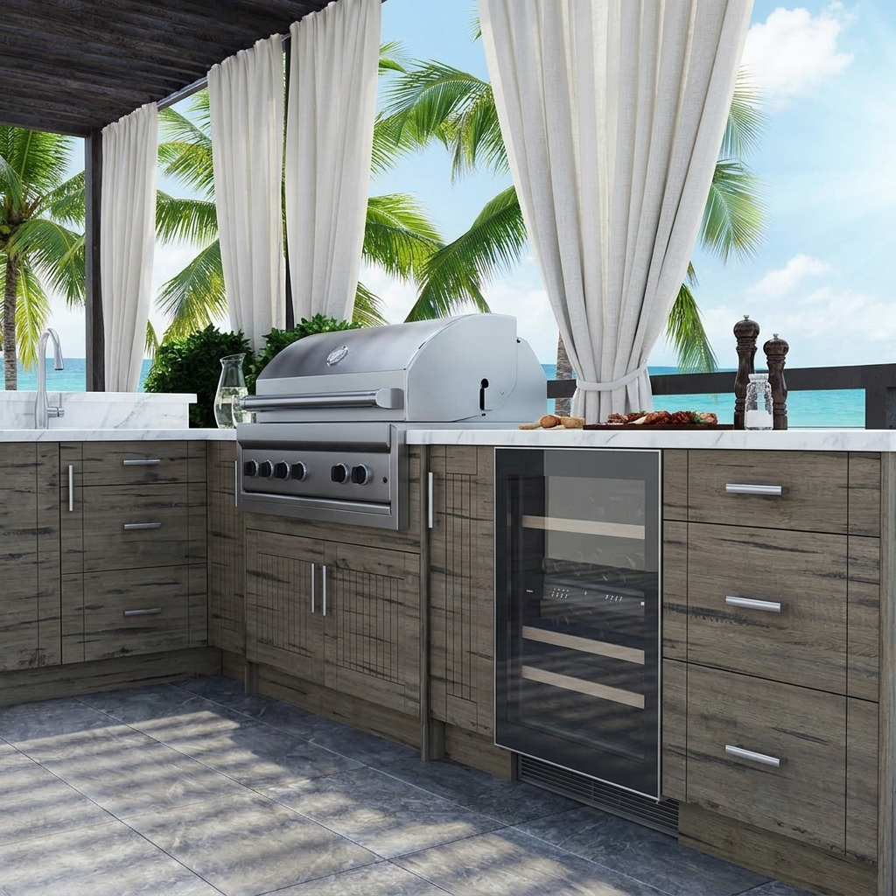
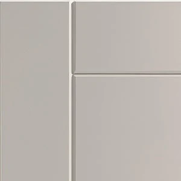
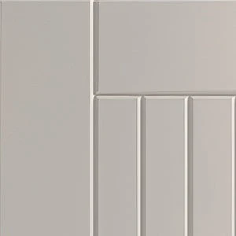
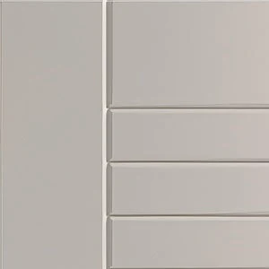

A SINGLE RUN
Straight
A contained setup for a terrace or patio wall: grill, useful worktop space and cabinets on one line.


OUTDOOR CABINETRY / WEATHERSTRONG
A proper outdoor kitchen takes more thought than placing a grill on the patio. The layout should feel natural, the storage should be useful, and the materials have to make sense outdoors.
WeatherStrong is one cabinet option we can work into an outdoor kitchen plan. It brings a familiar finished-cabinet look to the grill area, with weather-resistant materials in place of ordinary interior cabinetry.

PLANNING THE SPACE
Straight, L-shaped or U-shaped: each makes room for the grill, counter space and storage in a different way.
A SINGLE RUN
A contained setup for a terrace or patio wall: grill, useful worktop space and cabinets on one line.
TURN THE CORNER
Two connected runs make room to separate cooking from prep, with a natural place to set food down.
TURN AROUND, THEN TURN AROUND AGAIN
More room for dedicated cooking, preparation and serving areas when the patio footprint allows it.
Layout and clearances are worked out around the chosen grill and available space.
WHY THE MATERIALS ARE DIFFERENT
Outdoor cabinetry shouldn't rely on ordinary interior wood construction to survive rain and humidity.
WeatherStrong makes the cabinet boxes, backs and shelves from ¾-inch All-Weatherboard® composite. Doors and drawer fronts are marine-grade high-density polyethylene (HDPE), rather than solid timber with an applied stain. The system is designed to resist moisture-related swelling and deterioration, and the door finishes are designed to resist UV-related fading.
Stainless-steel hardware and adjustable legs finish the system. It is outdoor cabinetry made for the actual conditions around a patio.

DOORS & FINISHES
The same outdoor-grade cabinet construction can take on a very different character with the right door and finish.
FOUR WEATHERSTRONG DOOR PROFILES
Miami is a simple slab. Sanibel has Shaker-inspired proportions. Daytona adds a cottage-style routed detail. Tampa brings a horizontal louvered look.
See the manufacturer’s door styles ↗




SOLID-COLOR FINISHES
TEXTURED WOODGRAIN FINISHES
Product photos and on-screen swatches are guides. Final selections are made from actual WeatherStrong samples.
THE FINISHED FIT
Cabinet runs should feel at home with the patio and the way it's used. Landing space beside the grill, practical drawers, clean end panels and a counter at the right height make the difference between a row of boxes and a useful kitchen.
Grill specifications, ventilation, clearances and utility connections guide the layout. Those details are settled before openings and countertops are finalized.
OUTDOOR CABINETRY
Send a few pictures, rough dimensions and the grill you have in mind. We can discuss how the cabinets and the rest of the space ought to come together.